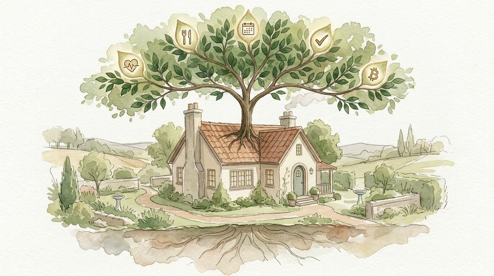

Developer preview for home-lab operators
Self-hosted software for running a household.
Software that you grow — we provide the seedling.
A local-first app suite for people comfortable running a home server. You operate the infrastructure; Sovereign Home runs no shared backend. Your household gets focused tools for meals, calendars, tasks, budgeting, documents, and more.
The two-minute tour
From seedling to suite
What runs on your server, who it is for, and how Home Base keeps the operator in the loop.
Built for households. Operated by you.
For self-hosters who already understand why a home server is worth running.
Bring a Home Lab
Bring an Ubuntu or Debian host with working SSH access, storage, and a backup plan. Home Base works inside that environment.
Use an Agent
Point a coding agent at the repository to inspect prerequisites, adapt configuration, diagnose failures, and walk through proposed host changes.
Give the Family Focused Tools
You manage the deployment. Household members get approachable, single-purpose apps without needing access to the control plane or host.
The Suite
Family Pulse leads the first release. Home Base and the rest of the suite open in stages.
Home Base
A plan-first control plane for bootstrapping a Debian-family host and managing the suite. Privileged changes remain explicit and reviewable.
View repository → AvailableFamily Pulse
A direct-to-Plaid household finance dashboard that keeps accounts, transactions, budgets, and reports in PostgreSQL you run.
View repository → Developer PreviewHome Source
An encrypted document vault with browser-side PKI, scanning, backups, and optional local-LLM indexing and analysis.
View repository → AvailableFamily Dinner
Meal planning and recipes. Plan your week, save what your family actually eats, generate grocery lists.
View repository → AvailableFast to Eat
Intermittent fasting tracker. Set your eating window, check in daily, and track streaks across the household.
View repository →Family Plan
A local family calendar that can aggregate external iCal feeds and optionally write to Google Calendar.
Bitcoin Accounting
Local treasury accounting for cost basis, wallet verification, and tax reporting. Built for operators who understand the custody boundaries.
View repository → Developer PreviewFamily Help
Tasks, reminders, and household coordination. One shared board so nothing falls through the cracks.
View repository →Home Ops
Property management — garage, pool, yard maintenance schedules and coordination.
How It Works
Home Base reduces repeatable administration; it does not remove the operator from the loop.
Provision the Host
Start with a supported Ubuntu or Debian machine, SSH access, storage, and a backup plan.
Install Home Base
Follow the public operator guide to get the control plane running on a supported Ubuntu or Debian host.
Review and Install
Inspect the plans, configuration, and host changes before installing the apps your household needs.
Operate and Recover
Monitor services, test backups, apply updates deliberately, and keep the system understandable when something fails.
Why This Exists
Run the core at home, keep the boundaries visible, and adapt the software to your household.

Local-First by Design
Application databases and files live on your server. Optional features may connect to Plaid, Google, OpenAI, Tailscale, or notification providers; each repository documents that boundary.
Private-Network First
Tailscale is the recommended remote-access path; Headscale or your own private-network design can replace it. Home Base is not intended for direct exposure to the public internet.
Free and Open Source
Each released repository carries its own license and operator documentation. Inspect it, fork it, fix it, or adapt it without depending on an app store or hosted product.
Bitcoin Is Optional
Bitcoin Accounting is for operators who need local cost-basis, verification, and reporting tools. It is one part of the suite, not a requirement for using the rest.
Grow Your Own
These apps are working starting points rather than a sealed appliance. Keep what fits, change what does not, and extend the system as your household's needs evolve.
Want the full story? Read more at forbell.com
About
Eric Forbell
25 years in software engineering. Former researcher at USC's Institute for Creative Technologies. Currently building enterprise systems by day and family-first software by night. Father of two. Based in Florida.
The Sovereign Home grew out of software I operate for my own household. It is a personal open-source project for technically capable self-hosters, not a funded startup or managed service.
forbell.com →